PHASE 1 · ACTIVATE MEMBERS
Fees created by the initial $COFFERS market and ecosystem activity fund level-weighted rewards. Distributions may use USDC, another approved token or tokenized real-world assets.
COLORING BOOK No. 4444
BUILT ON ARC
A DeFi house drawn by a kid.
Built by everyone inside.
please color
outside the lines!
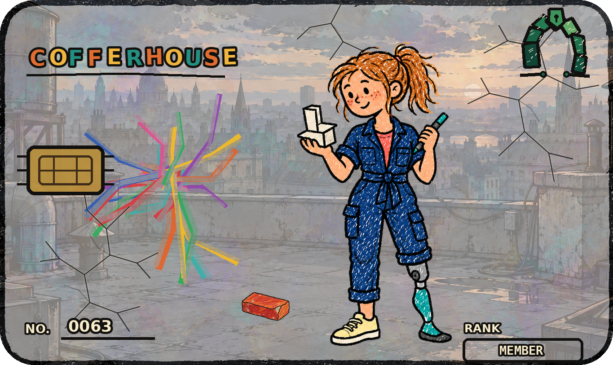
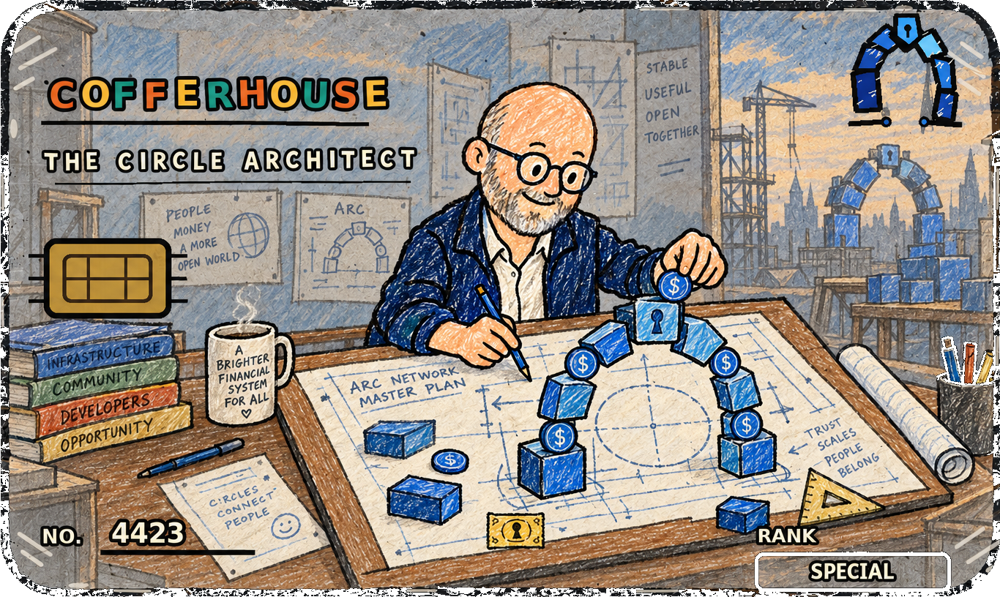
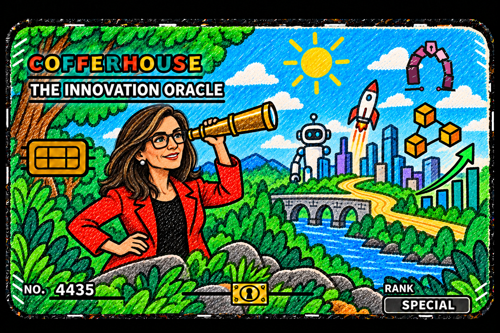
ONE KEY.
A WHOLE
HOUSE.
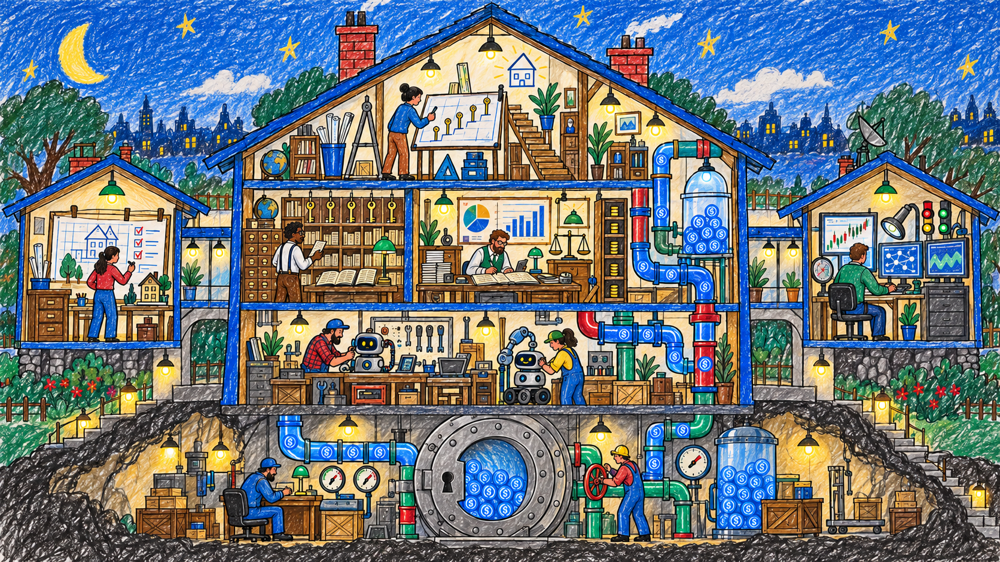
CofferHouse is infrastructure disguised as a coloring book: autonomous tools upstairs, transparent accounting in the middle, and The Big Coffer beneath the floor.
Your key connects membership, ascension and rewards in Holder Center, with access to the Bot Workshop, Agent Suite and research tools as each service becomes available.
100 keys are reserved for the team, marketing and community, including selected Arc recipients and Jesse. Other crypto and political Specials remain in the public mint.
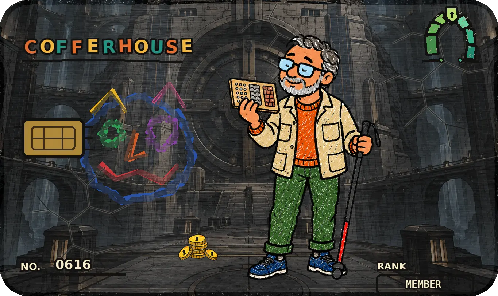
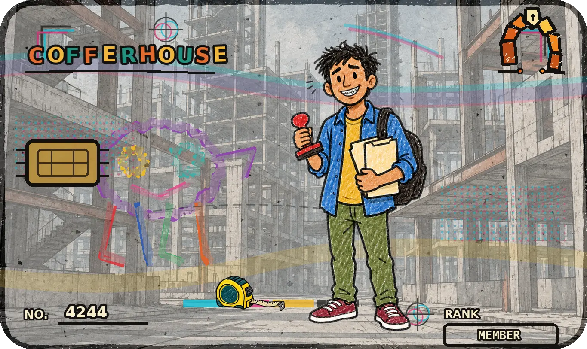
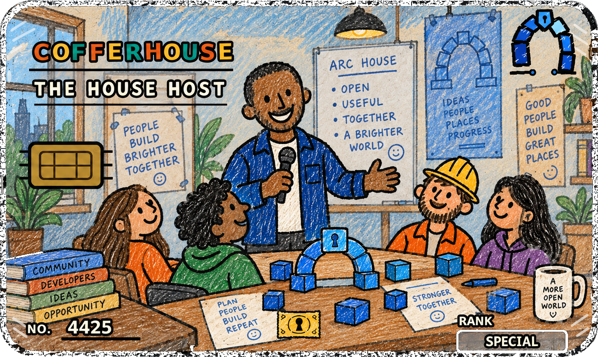
MEMBERSHIP · IDENTITY · ACCESS
TURN PAGE 03 →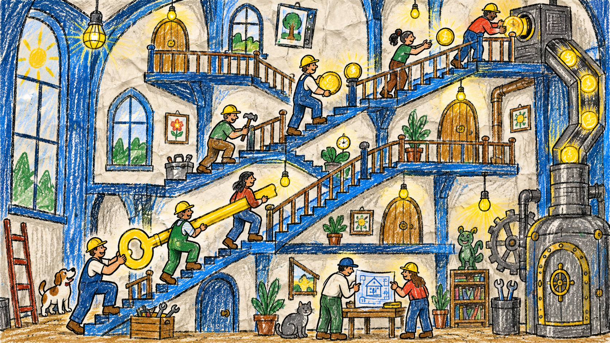
Your activated level determines your reward points. Explore the planned access below.
Inactive: 0 points. Activated levels 1–5: 1 / 2 / 3.5 / 5 / 8 points. Your share equals your eligible points divided by all eligible points, applied to the funded reward budget. Points are not an APY.
Activation and successive ascension steps: 20K → 80K → 320K → 1M → 2M $COFFERS. Costs apply per step.
Each operation advances one level. Keep one key at the previous active level and burn additional eligible keys. Choose one complete recipe; sacrificed keys must share the same level. Initial activation requires $COFFERS.
The mint builds the long-term treasury. $COFFERS activates keys and powers ascension. Holder Center connects rewards with bots, agents and tools, with each service clearly marked as preview or future release.
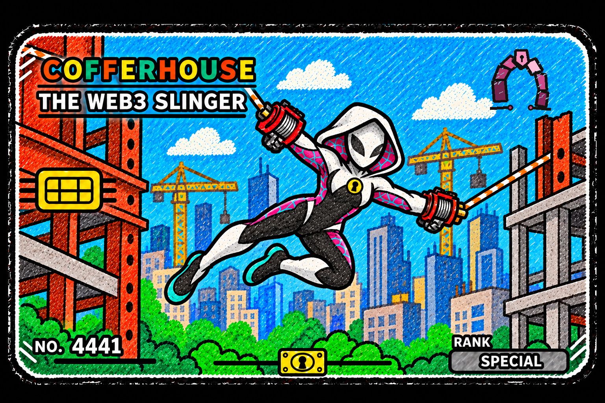
Fees created by the initial $COFFERS market and ecosystem activity fund level-weighted rewards. Distributions may use USDC, another approved token or tokenized real-world assets.
Members test DCA, monitoring and research tools using only the rewards they receive from the project.
Members may allocate larger balances. Invited users access selected tools by paying in $COFFERS.
NFT holders are first in benefit order; token holders follow. The final system may combine periodic rewards, raffles, buyback and burn, and preferential loans.
Activity fees and realized agent income begin funding rewards, security reserves and The Big Coffer.
After contract audits, isolated USDC supply and borrow markets open. Borrower interest, after reserves, becomes income for The Big Coffer.
Tested DCA bots, approved agents and the market scanner become operational within published member and risk limits.
Risk controls, routing, accounting and benefit distribution become progressively automated after reliable operation.
Once the House can operate reliably, treasury and protocol governance progressively decentralize to the community DAO.
N0 is inactive. Active levels: N1 Member → N2 Builder → N3 Steward → N4 Partner → N5 Keyholder.
Each operation advances one level. Keep one key at the previous active level and burn additional eligible keys. Choose one complete recipe; sacrificed keys must share the same level. Initial activation requires $COFFERS.
CURRENT MODEL — percentages, reward assets, thresholds, preferential rate and distribution cadence may change before launch.
OPEN THE BOT WORKSHOP 05 →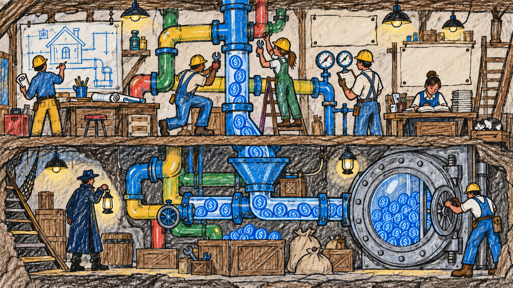
Recurring buys into $COFFERS, crypto or tokenized assets using a chosen schedule.
SIMULATION · NO LIVE EXECUTIONPlanned fee: 95% user / 5% maintenance on realized profit, never on the test balance. Live strategies require separate release and approval.
Bots: demos and reviewed scripts. Connecting them to the agents is planned.
Agents: market research, strategy modelling and risk monitoring. Current previews do not trade or custody funds.
Tools: DEX and liquidity analysis, opportunity filters and monitoring. Availability is shown in Holder Center.
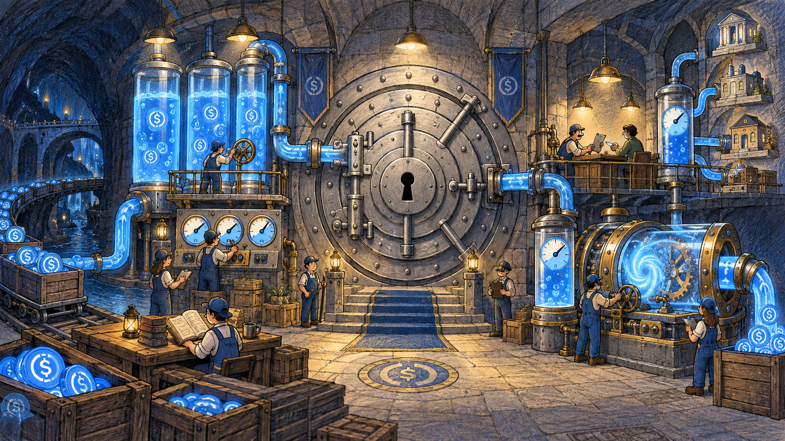
A long-term USDC credit layer seeded from the mint. Suppliers provide liquidity; borrowers post approved crypto, tokenized assets or RWAs and draw USDC. Every collateral/USDC pair operates as an isolated market with its own published limits, so risk in one listing does not automatically spread to every market.
Benefit order: NFT members first, then the $COFFERS community. Rewards, raffles, periodic buyback and burn, and preferential loans remain subject to final rules.
ISOLATED MARKETS.
VISIBLE RISK.
LONG-TERM LIQUIDITY.
The House market room compares liquidity, yield, utilization and risk before any routing decision. Values below are illustrative—not live.
The House planning room tracks construction without artificial dates. Each phase advances only when its contracts, tests and risk controls are ready.
✓ Collection system and visual identity
✓ Membership, ascension and economy model
◐ Site, documentation and final asset review
□ OpenSea mint on Arc
□ Publish contracts and wallets
□ Launch $COFFERS market and liquidity
□ Member dashboard and ascension
□ Level-weighted rewards in approved assets
□ Burn, Empower and staking modules
□ DCA, monitoring and research previews
□ Member testing with project rewards
□ Larger member balances after validation
□ Invited-user access paid in $COFFERS
□ Grid and liquidity scanner
□ Copy, prediction and DeFi agents as tested
□ USDC supply and borrow market
□ Risk dashboard and preferential member rate TBA
□ Holder-benefit distribution rules
□ Proposal and treasury governance
□ Voting considers unique holders, NFT count and $COFFERS
□ Progressive protocol decentralization
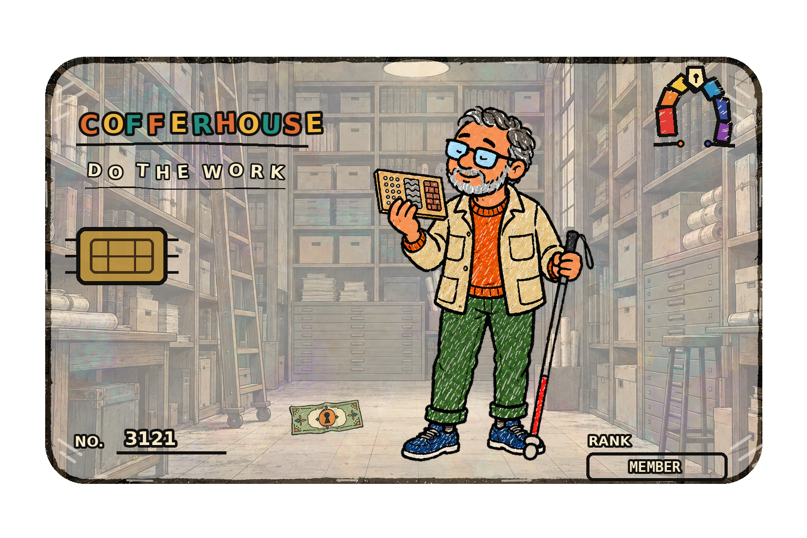
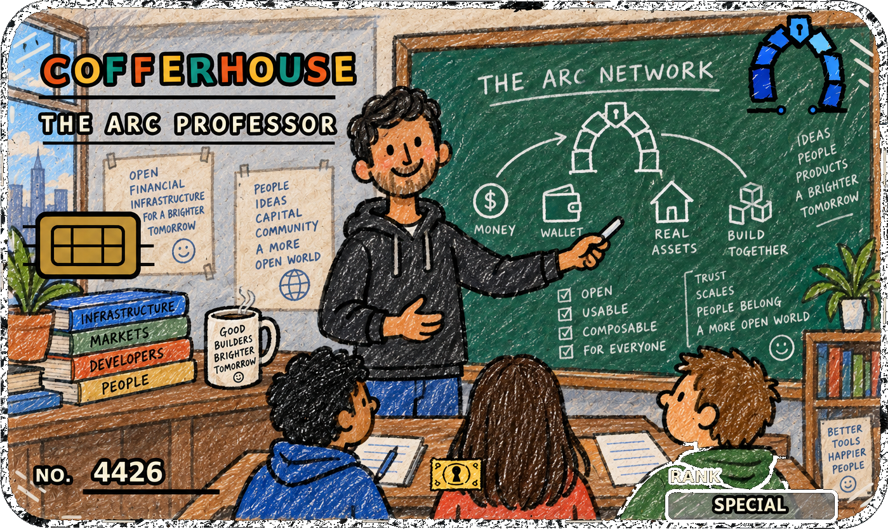
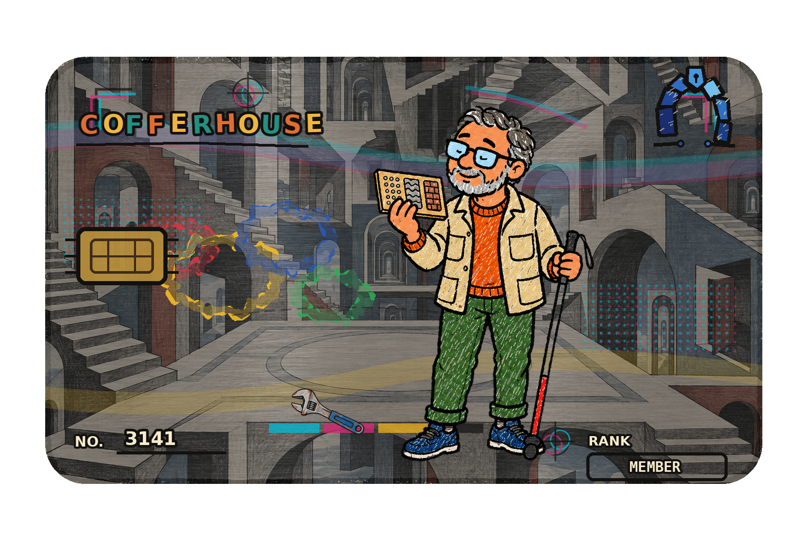
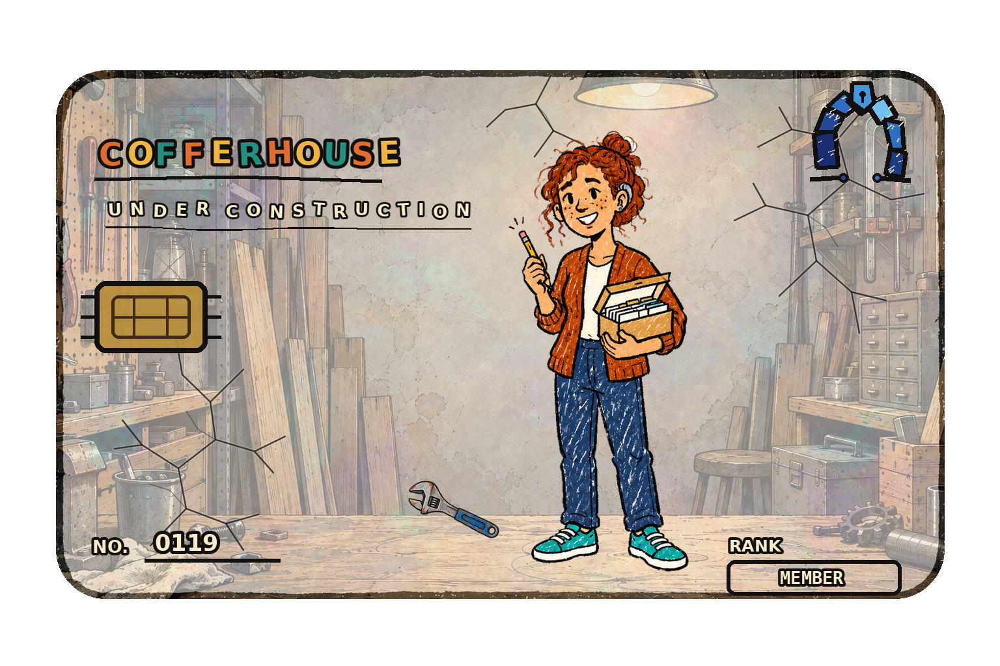
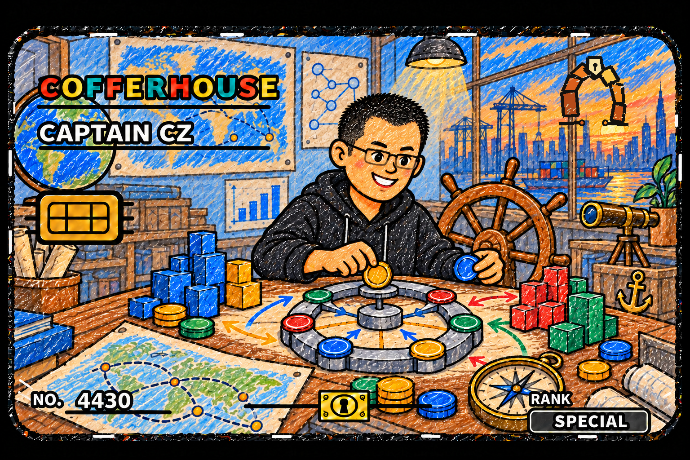
BUILT BY EVERYONE INSIDE
Membership mint: not open yet. The collection is being prepared on OpenSea; the public mint link and date will be announced here. $COFFERS purchase access is not available yet.
Contracts, risk parameters and economics become final only when published.